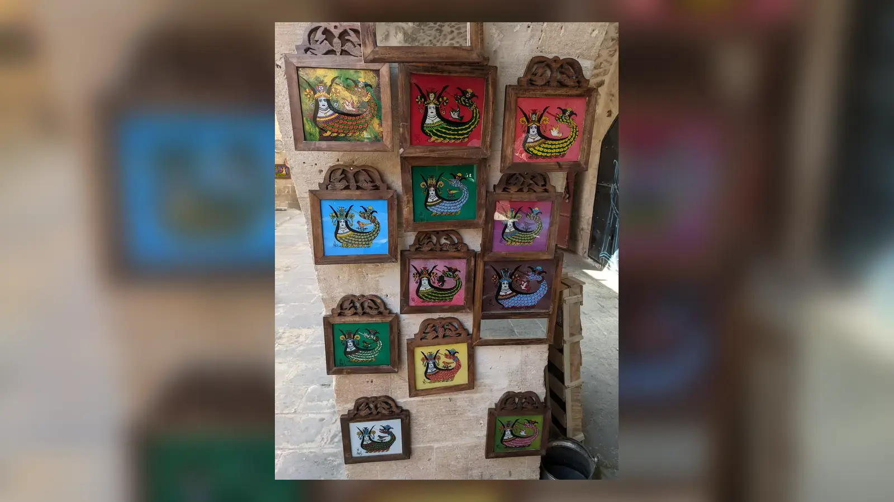
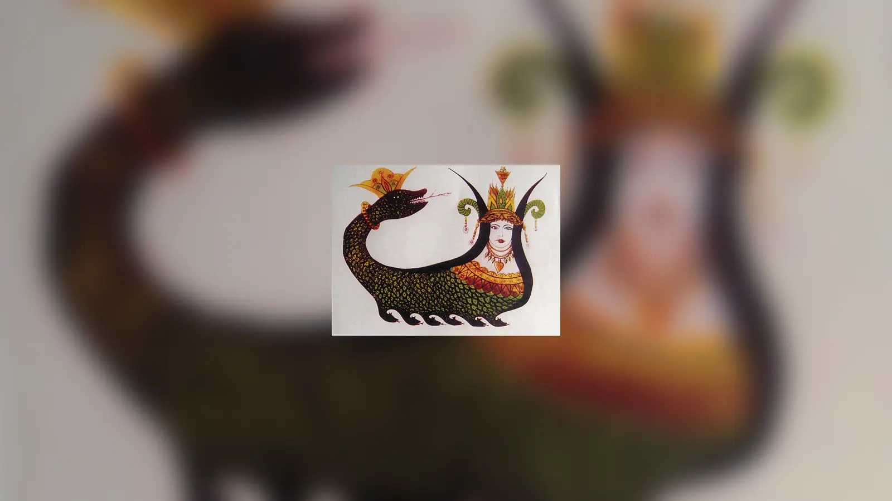
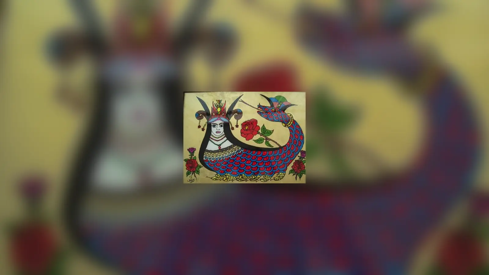

Bir kuyunun dibinde başlayan hikâye, bir hükümdarın sarayında ölümle biter. Aradaki yol bal, ihanet, yeraltında saklanan bir ülke, konuşan yılanlar ve insana verilmemesi gereken bilgiyle örülüdür. Bugün Şahmaran denildiğinde çoğu kişinin zihninde kadın başlı, yılan gövdeli bir varlık belirir. Fakat onu yüzyıllardır yaşatan asıl unsur görüntüsünden çok, kendisine güvenen insanla kurduğu ilişkinin nasıl bozulduğudur.
Şahmaran efsanesi nedir diye sorulduğunda verilebilecek en açık cevap şudur: Şahmaran, Anadolu başta olmak üzere İran ve daha geniş Yakındoğu anlatı çevreleriyle ilişkili, yılanların hükümdarı olarak tasarlanan; bilgelik, gizli bilgi, şifa, ölüm ve ihanet temalarının çevresinde şekillenen efsanevi bir varlıktır. Anadolu’daki görsel gelenekte çoğunlukla kadın başlı ve yılan gövdeli biçimde tanınır. Fakat bugün “Şahmaran’ın gerçek hikâyesi” adıyla anlatılan popüler olay örgüsü tek bir eski metnin değişmeden günümüze ulaşmış biçimi değildir.
Yazılı Câmasbnâme geleneği, Binbir Gece çevresindeki benzer anlatılar ve Anadolu’da gelişen yerel varyantlar zaman içinde birbirine yaklaşmış, bazı ayrıntılar yer değiştirmiştir. XV. yüzyılda Mûsâ Abdi’nin Türkçe kaleme aldığı Câmasbnâme güçlü bir dayanak sunar: Câmasb’ın kuyuda bırakılması, yılanlar ülkesine ulaşması, Şahmaran’ın güvenini kazanması, sırrı açığa vurması ve Şahmaran’ın bedeninden hükümdara ilaç yapılması bu metinde açık bir olay zinciri hâlindedir. Tarsus hamamı, Lokman Hekim, deride beliren pullar veya yılanların bir gün kenti basacağı inancı ise farklı yerel anlatılarda başka biçimler kazanır.
Şahmaran Kimdir ve Adı Ne Anlama Gelir?
“Şahmaran” ya da “Şahmeran” adı Farsça kökenli bir terkiple açıklanır. “Şâh” hükümdar, “mâr” yılan, “mârân” ise yılanlar anlamındaki çoğul biçimdir; “şâh-ı mârân” böylece “yılanların şahı” veya “yılanların hükümdarı” anlamına gelir. Türkçede tamlama zamanla tek bir özel ad gibi Şahmaran veya Şahmeran biçiminde kullanılmaya başlamıştır. Buradaki “şah” sözcüğünün modern Türkçede erkek hükümdarı çağrıştırması, efsanevi varlığın mutlaka erkek olduğu sonucunu doğurmaz.
Nitekim Anadolu’daki resim geleneğinde Şahmaran belirgin biçimde kadın yüzüyle tanınırken bazı sözlü varyantlarda insan kısmının erkek olarak tarif edildiği de kaydedilmiştir. Bu değişkenlik önemlidir; çünkü Şahmaran’ın bugün neredeyse değişmez kabul edilen kadın-yılan görüntüsü, anlatı tarihinin bütün aşamalarını aynı ölçüde temsil etmez. Buna karşılık cam altı resimlerinde, dokumalarda, bakır eşyalarda ve çağdaş sanat eserlerinde kadın yüzlü biçim öylesine yaygınlaşmıştır ki Şahmaran’ın modern görsel kimliği büyük ölçüde bunun üzerine kurulmuştur.
“Yılanların hükümdarı” ifadesi onu sıradan bir canavar olmaktan çıkarır. Câmasbnâme’de Câmasb’ın ulaştığı yer rastgele yılanların doluştuğu bir çukur değil, Şahmaran’ın hükmettiği düzenli ve olağanüstü bir dünyadır. Şahmaran konuşur, bilgi sahibidir, misafirini öldürmez; tersine ona iyi davranır ve hikâyeler anlatır. Bu özellikler, sonraki Anadolu yorumlarında şifa veren, sırrı bilen, koruyucu veya bilge Şahmaran imgesinin gelişebileceği güçlü bir anlatı zemini yaratmıştır.
Şahmaran Efsanesinin Gerçek Hikâyesi
“Gerçek hikâye” burada tarihsel olarak yaşanmış olay anlamına gelmez. Şahmaran’ın tarihsel bir kişi olduğuna dair kanıt bulunmadığı gibi efsanenin tek bir değişmez metni de yoktur. Aşağıdaki anlatımın omurgası, Türk edebiyatındaki en önemli yazılı tanıklıklardan Mûsâ Abdi’nin 1429-1430’da tamamladığı Câmasbnâme’deki Câmasb–Şahmaran çerçevesine dayanır. Halk arasında çok bilinen bazı ayrıntılar bu olay örgüsüyle örtüşürken bazıları daha sonraki veya yerel varyantlara aittir.
Câmasbnâme’de hikâye Câmasb’ın babası Dânyâl ile başlar. Dânyâl hikmet sahibi bir kişidir ve ölümünden önce bilgisini taşıyan kitabı, ileride doğacak oğluna verilmek üzere eşine bırakır. Câmasb büyüdüğünde eğitimde ve çeşitli işlerde beklenen başarıyı gösteremez. Sonunda geçimini dağdan odun getirerek sağlamaya başlar. Bir gün arkadaşlarıyla dağa çıktığında yağmurdan korunmak için sığındıkları yerde bal bulunan bir kuyu keşfederler.
Câmasb kuyuya indirilir ve balı yukarıdakilere verir. Fakat arkadaşları elde ettikleri kazancı onunla paylaşmamak için Câmasb’ı kuyunun dibinde bırakır. Bu ihanet, hikâyenin sonraki büyük ihanetini hazırlayan ilk kırılmadır. Câmasb yalnız kaldığında kuyudan çıkmanın başka bir yolunu arar; açtığı geçit onu insan dünyasının altında bulunan olağanüstü bir mekâna götürür. Burada bir saray ve yılanlar ülkesiyle karşılaşır.
Yılanların hükümdarı Şahmaran onu düşman olarak karşılamaz. Câmasb’a iyi davranır, yiyecek verir ve onun hikâyesini dinler. Câmasbnâme’nin yapısı burada modern kısa Şahmaran özetlerinden çok daha geniştir. Şahmaran Câmasb’a başka maceralar anlatır; Bulkıya, Cihan Şah ve başka kahramanların hikâyeleri ana çerçevenin içine girer. Dolayısıyla tarihî Câmasbnâme, bugün birkaç dakikada anlatılan “Cemşab ile Şahmaran” öyküsünden çok daha hacimli, iç içe geçmiş bir anlatılar bütünüdür.
Câmasb zamanla evine dönmek ister. Şahmaran onun gitmesine razı olurken gördüklerini ve yılanlar ülkesinin yerini insanlara açıklamamasını ister. Câmasb böylece yeniden insan dünyasına çıkar. Hikâyenin ahlaki düğümü burada sıkılır: yeraltında kendisine zarar vermeyen, tersine onu koruyan bir varlığın sırrını taşıyan insan, artık bu bilgiyi kendi dünyasının baskıları karşısında korumak zorundadır.
Bir süre sonra ülkenin hükümdarı Keyhusrev ağır hastalanır. Onun iyileşmesi için Şahmaran’ın etine ihtiyaç olduğu öğrenilir. Câmasb’ın Şahmaran’ın yerini bildiği anlaşılınca sırrı açıklaması istenir. Mûsâ Abdi’nin anlatısında Câmasb, öldürülmekten korktuğu için Şahmaran’ın yerini söyler. Bu ayrıntı önemlidir: popüler anlatının bazı biçimlerinde Cemşab açgözlü bir hain gibi çizilirken yazılı çerçevede ihanet baskı ve ölüm korkusuyla ilişkilidir. Bu, eylemin sonucunu değiştirmez ama kahramanın ahlaki konumunu karmaşıklaştırır.
Şahmaran tılsımla yakalanır ve öldürülür. Etinden hazırlanan ilaç hükümdarın iyileşmesini sağlar. Câmasb ise Şahmaran’dan öğrendikleriyle ve babasının bıraktığı kitaptaki bilgilerle büyük bir hakîm olur. Böylece anlatının en sarsıcı paradoksu ortaya çıkar: Şahmaran bedenen yok edilirken onun bilgisi insan dünyasına geçer. Şifa bir canlının öldürülmesinin ardından elde edilir; bilgi ise güven ilişkisinin bozulmasıyla yayılır.

Anadolu’da çok bilinen başka bir anlatımda kahraman çoğu kez Cemşab diye anılır. Arkadaşları onu bal kuyusunda bırakır, Şahmaran’la karşılaşır ve onun yerini saklayacağına söz verir. Yıllar sonra hükümdarın hastalığı üzerine Şahmaran aranır. Onun yerini bilen kişinin hamama sokulduğunda bedeninde pullar belireceği gibi motifler devreye girebilir. Cemşab’ın sırrı böyle açığa çıkar; Şahmaran öldürülmeden önce bedeninin hangi kısmının ya da kaynatıldığı suyun kimin tarafından tüketileceğini söyler.
Tam bu noktada varyantlar belirgin biçimde ayrılır. Bir anlatıda baş, gövde ve kuyruk farklı sonuçlar doğururken başka birinde birinci, ikinci ve üçüncü kaynatma suyunun etkileri anlatılır. Kimin zehirlendiği, kimin şifa bulduğu ve kahramanın bilgiyi nasıl edindiği değişebilir. Dolayısıyla internette sık görülen “Şahmaran ölmeden önce şu üç talimatı verdi” biçimindeki kesin listeler bütün geleneğin değişmez metni değildir.
Aynı Hikâyenin Farklı Anlatımları
Şahmaran anlatısı yüzyıllar boyunca tek bir kitapta donup kalmadı. Mesnevi, mensur hikâye, masal, efsane, halk resmi, tiyatro, sinema ve televizyon gibi farklı ortamlara taşındıkça yeni ayrıntılar kazandı. Üstelik bu aktarım yalnız Türkçe içinde gerçekleşmedi. Câmasb/Jamasp adı İran kültür çevresinde daha eski bir geçmişe sahiptir; Câmasbnâme başlığı altında birbirinden içerik bakımından farklı metinler bulunur. Aynı adı taşıyan her eseri bugünkü Şahmaran hikâyesinin doğrudan nüshası saymak bu nedenle doğru değildir.
TDV İslâm Ansiklopedisi’nin Câmasbnâme maddesi bu ayrımı açık biçimde gösterir. Farsça Câmâsbnâme geleneğinde İran mitolojisinin bilge veziri Câmasb’la ilişkilendirilen, kozmoloji ve geleceğe dair bilgiler içeren metinler vardır. Ahmed-i Dâî’nin Türkçe Câmasbnâme’si de Nasîrüddîn-i Tûsî’ye atfedilen farklı bir eserin çevirisidir. Mûsâ Abdi’nin 5.122 beyitlik Câmasbnâme’si ise konu bakımından bunlardan ayrılır ve Câmasb’ın Şahmaran’la karşılaşmasını içeren geniş hikâye çevresini anlatır.
Abdi kendi eserini aynı adlı bir kitaptan nazmen çevirdiğini söyler, fakat kaynak metnin dilini ve kimliğini açıklamaz. Araştırma tarihinde eserin kaynağı konusunda farklı öneriler yapılmıştır. Gibb, Binbir Gece Masalları’ndaki “Yılanlar Kraliçesi” hikâyesiyle bağlantı kurarken Irène Mélikoff başka bir aktarım hattını tartışmıştır. Bu görüş ayrılığı bile “Şahmaran’ın kesin ilk yazılı kaynağı şudur” cümlesini kurarken neden temkinli olmak gerektiğini gösterir.
Binbir Gece çevresinde Hâsib Kerimüddin ve Yılanlar Kraliçesi adıyla bilinen anlatının Şahmaran geleneğiyle güçlü benzerlikleri bulunur. Kahramanın yılanlar dünyasına girişi, olağanüstü hükümdarla karşılaşması ve iç içe hikâyeler yapısı tanıdıktır. Fakat benzerlik, elimizde bütün varyantları tek çizgi üzerinde tarihlendirecek kusursuz bir soy ağacı olduğu anlamına gelmez. Sözlü aktarım, çeviri, uyarlama ve yeniden yazım süreçleri aynı motifleri farklı bağlamlarda dönüştürmüştür.
Cemşab, Câmasb ve Hâsib Aynı Kahraman mı?
Günümüzde Şahmaran hikâyesinin insan kahramanı çoğu zaman “Cemşab” diye bilinir. Mûsâ Abdi’nin eserinde ise ad Câmasb’dır ve Dânyâl peygamberin oğlu olarak tanıtılır. Arapça Binbir Gece geleneğinde Hâsib Kerimüddin adıyla karşılaşılan kahraman da benzer bir anlatı çevresinin merkezindedir. Bu adları hiçbir açıklama yapmadan birbirinin yazım hatası gibi göstermek farklı metin geleneklerini görünmez kılar.
Câmasb adı İran geleneğinde başlı başına eski ve önemli bir addır. Zerdüştî ve İranî anlatı çevrelerinde bilge Jamasp/Câmasb figürü bulunur. Fakat bu tarihsel-kültürel arka plan, Anadolu’daki Cemşab anlatısının bütün ayrıntılarının doğrudan eski İran’dan hiç değişmeden geldiğini kanıtlamaz. Aynı adın ve bilgelik temasının farklı dönemlerde yeni hikâyelerle birleşebilmesi sözlü ve yazılı kültürün olağan işleyişidir.
“Cemşab” biçimi halk anlatısında yaygınlaşmış adlandırmalardan biridir. Bir varyantı anlatırken Cemşab, başka bir metni incelerken Câmasb veya Hâsib demek bu nedenle çelişki değildir; önemli olan hangi adın hangi anlatı katmanında kullanıldığını belirtmektir. Aynı dikkat Bulkıya/Belkıya ve başka karakter adları için de gereklidir. Şahmaran çevresinde dolaşan bütün adları tek bir kadronun üyeleri hâline getirmek kaynakları birbirine karıştırır.
Câmasbnâme ve Şahmaran’ın Yazılı Hafızası
Mûsâ Abdi, II. Murad döneminde yaşayan XV. yüzyıl şairlerindendir. Câmasbnâme’yi 833 Hicrî, yani 1429-1430’da tamamladığını belirtir. Eser 5.122 beyitten oluşur ve ana hikâyenin içine başka hikâyeler yerleştiren geniş bir mesnevidir. Türk edebiyatında Şahmaran anlatısının yazılı tarihini araştırırken bu eser vazgeçilmezdir; ancak “Şahmaran ilk kez 1429’da ortaya çıktı” sonucunu buradan çıkarmak mümkün değildir. Bir anlatının belirli tarihte yazıya geçirilmesi, motiflerinin o tarihte doğduğu anlamına gelmez.
Eserin çok sayıda yazma nüshasının bulunması anlatının dolaşımını göstermesi bakımından değerlidir. TDV İslâm Ansiklopedisi; Ankara, İstanbul, Konya, Paris, Londra, Oxford, Vatikan ve Leiden gibi merkezlerde nüshalar kaydeder. Mevlânâ Mahmud tarafından XV. yüzyılda istinsah edildiği belirtilen Biblioteca Apostolica Vaticana Barberiniani Orientali 103 numaralı nüsha mevcut eski tanıklıklardan biri olarak özellikle önemlidir.
Yazma çoğulluğu bize başka bir şeyi de hatırlatır: matbaa öncesi “kitap”, tek ve değişmez bir metin değildir. Kopyalar arasında farklar oluşabilir; hikâyeler kısaltılabilir, genişletilebilir veya yeniden düzenlenebilir. Daha sonraki mensur Câmasbnâme’ler ve halk kitapları, Abdi’nin anlatısından yararlanarak hikâyeyi yeni okur çevrelerine taşımıştır. XX. yüzyıl başlarında basılan Şahmaran hikâyeleri de bu uzun dönüşümün parçalarıdır.
Bu nedenle Şahmaran’ın bugünkü popüler biçimi ne yalnız “antik bir mitin bozulmuş hâli” ne de yakın dönemde birdenbire yaratılmış bir masaldır. Daha doğru tanım, eski adları ve motifleri bünyesinde taşıyan, Orta Çağ ve erken modern yazılı kültüründen geçen, yerel sözlü geleneklerle yeniden biçimlenen yaşayan bir anlatı ağıdır. Bu ağın her kolu aynı tarihsel ağırlığa sahip değildir; fakat birlikte Şahmaran’ın neden bu kadar çok biçimde karşımıza çıktığını açıklar.
Şahmaran Neden Öldürüldü?
Şahmaran’ın ölümü, anlatının varyantlarını birbirine bağlayan en güçlü düğümlerden biridir. Mûsâ Abdi’nin Câmasbnâme’sinde hükümdar Keyhusrev hastadır ve onun şifasının Şahmaran’ın etine bağlı olduğu öğrenilir. Câmasb sırrı ölüm tehdidi altında açıklar. Şahmaran yakalanır, öldürülür ve etinden hazırlanan ilaç hükümdarı iyileştirir. Burada ölümün doğrudan gerekçesi iktidar sahibinin bedenini kurtarmaktır.
Tarsus’tan derlenen halk efsanelerinde ayrıntılar değişebilir. Hükümdarın hastalığı, vezirin Şahmaran’ı ele geçirmek istemesi, Lokman Hekim’le kurulan bağ veya kahramanın hamamda teşhis edilmesi gibi unsurlar farklı birleşimler oluşturur. Bazı anlatılarda kötü niyetli vezir Şahmaran’ın bilgisini kendisi için ister; Şahmaran ise ölümünün kaçınılmaz olduğunu anlayınca hangi parçanın veya suyun kime verilmesi gerektiğini düzenleyerek son anda olayların sonucunu değiştirir.
Bu varyantların ortak gerilimi açıktır: Şahmaran insan dünyasına saldırdığı için öldürülmez. Onun sahip olduğu şey —bedeninde bulunan şifa ve taşıdığı bilgi— insan iktidarı için değerli olduğu için hedef olur. Böyle bakıldığında hikâyedeki canavar ile kurban arasındaki sınır tersine döner. Yılan biçimli olağanüstü varlık Câmasb’a zarar vermemiştir; şiddeti başlatan, onun sırrını ve bedenini kullanmak isteyen insan dünyasıdır.
Bu durum Şahmaran’ı kusursuz bir “iyilik tanrıçası” ilan etmeyi gerektirmez. Anlatıların türü ve tarihsel bağlamı buna izin vermez. Fakat olay örgüsü bilgiye sahip olmanın güvenlik sağlamadığını gösterir. Şahmaran’ın bilgeliği onu iktidarın ihtiyaçlarından koruyamaz; tam tersine onu değerli ve dolayısıyla ele geçirilmek istenen bir varlık hâline getirir.
Şahmaran’ın Bedeninden Şifa ve Bilgi Nasıl Doğar?
Yılan, Şahmaran hikâyesinde zehirle şifanın aynı varlıkta birleşmesini mümkün kılan güçlü bir imgedir. Yılan zehri gerçek dünyada ölümcül tehlikeyle ilişkilidir; aynı zamanda zehir ve ilaç arasındaki sınırın kullanım bilgisine bağlı olması yılanı şifa anlatıları için elverişli bir sembole dönüştürmüştür. Ancak Şahmaran’daki şifa temasını modern farmakolojiye indirgemek doğru değildir. Efsanede bilgi, beden, sır ve iktidar birbirinden ayrılmaz.
Bazı halk varyantlarında Şahmaran’ın bedeni kaynatılır ve ortaya çıkan suların farklı etkileri vardır. Bir kap zehir, bir kap şifa, bir diğeri bilgelik sağlayabilir; hangi kabın kim tarafından içildiği anlatıya göre değişir. Başka varyantlarda etin veya bedenin farklı bölümleri öne çıkar. Bu farklılıklar, internette dolaşan tek satırlık formüllerin neden evrensel kabul edilemeyeceğini gösterir.
Mûsâ Abdi’nin çerçevesinde Câmasb’ın hakîm oluşu yalnız Şahmaran’ın bedenini tüketmesine bağlanmaz. Şahmaran’dan öğrendikleri ile babası Dânyâl’in bıraktığı kitap birlikte önem taşır. Bilginin aktarımı böylece daha katmanlıdır: Câmasb hem miras alınmış yazılı hikmetin hem yeraltında karşılaştığı olağanüstü öğreticinin bilgisinin taşıyıcısı olur.
Anlatı yapısı açısından daha çarpıcı olan, Şahmaran’ın ölümünün onun bilgisini yok etmemesidir. İnsanlar bedeni ortadan kaldırır ama bilgi başka bedene, başka kitaba ve başka anlatıya geçer. Şahmaran’ın yüzyıllar boyunca resimlerde tekrar tekrar çizilmesi düşünüldüğünde bu motif anlatının kendi tarihine de benzer: figür her yeniden anlatımda değişir, fakat tamamen kaybolmaz.
Şahmaran ile Lokman Hekim Arasındaki Bağ
Bugün Şahmaran ve Lokman Hekim adı sık sık yan yana getirilir. Popüler anlatının bazı biçimlerinde Cemşab’ın daha sonra Lokman Hekim olduğu söylenir; bazılarında Lokman ayrı bir kişidir ve Şahmaran’ın ölümünden sonra onun şifa bilgisini edinir. Tarsus’tan kaydedilen efsanelerde de Lokman Hekim’in Şahmaran’ın yardımıyla hekimlik bilgisini öğrendiğini söyleyen varyantlar vardır.
Fakat bu ilişkiyi bütün eski Şahmaran metinlerinin değişmez parçası saymak mümkün değildir. Mûsâ Abdi’nin ana çerçevesinde Şahmaran’ın yanında bulunan kişi Câmasb’dır ve sonunda büyük bir hakîm olur; bu, onu otomatik olarak Kur’an’da adı geçen Lokman’la veya halk kültüründeki Lokman Hekim figürüyle özdeşleştirmez. Lokman’ın Şahmaran çevresine katılması, şifa temasının Anadolu’daki güçlü bilge-hekim figürüyle buluşması olarak değerlendirilebilir.
Bu ayrım efsanelerin nasıl yaşadığını anlamak açısından değerlidir. Halk anlatısı tarih kitabı gibi karakter kimliklerini sabit tutmak zorunda değildir. Bir bölgede “bilgeliği alan kişi” Cemşab olarak kalırken başka bir yerde aynı işlev Lokman Hekim’e aktarılabilir. Burada önemli olan bu değişimi hata diye düzeltmek değil, hangi katmanın hangi anlatıda bulunduğunu göstermektir.
Şahmaran Tarsus’ta mı Yaşadı?
Tarsus, Türkiye’de Şahmaran’la en güçlü biçimde özdeşleşen kentlerden biridir. Kentte “Eski Hamam” olarak bilinen tarihî yapı halk arasında Şahmaran Hamamı adıyla anılır. Mersin İl Kültür ve Turizm Müdürlüğü de yapıyı bu yerel adla tanıtır ve Şahmaran’ın burada kesildiğine, kanının duvarlara sıçradığına inanıldığını belirtir. Fakat resmî sayfadaki ifade bile bunun bir inanış olduğunu gösterir; Şahmaran’ın tarihsel olarak burada yaşadığına veya öldürüldüğüne dair arkeolojik kanıt değildir.
Nilgün Çıblak’ın Tarsus üzerine saha çalışması, efsanenin kent hafızasında nasıl somut mekâna bağlandığını ayrıntılı biçimde gösterir. Hamamın duvarlarında ve göbek taşında görülen kırmızı izlerin Şahmaran’ın kanı olduğuna, burada yıkanmanın şifa sağlayabileceğine ve yılanların Şahmaran’ın ölümünü hâlâ bilmediğine ilişkin inanışlar kaydedilmiştir. Aynı çalışma, “yılanlar gerçeği öğrenirse Tarsus’u basacak” motifini de yerel halk inanışı olarak aktarır.
Hamamın kendisi tarihî bir yapıdır; yapı ile efsane arasındaki bağ ise başka türden bir gerçektir. Hamamın inşa ve onarım tarihi mimarlık tarihinin konusudur, Şahmaran’ın orada öldürüldüğü iddiası folklorun. Bu ikisini ayırmak yerel geleneğin değerini azaltmaz. Tam tersine, bir kentin efsaneyi nasıl kendi sokaklarına yerleştirdiğini daha iyi gösterir.
Yılan Kale gibi Çukurova’daki başka mekânlar da zaman zaman Şahmaran’la ilişkilendirilir. Ancak adında “yılan” bulunması veya bölgede efsanenin yaygın olması bu yapıların tarihsel Şahmaran mekânları olduğunu kanıtlamaz. Şahmaran’ın coğrafyası büyük ölçüde anlatının coğrafyasıdır: hikâye bir yere yerleştiğinde kuyu, mağara, hamam ve kale gibi gerçek yapılar efsanenin hafıza noktalarına dönüşebilir.
Mardin ve Anadolu’da Şahmaran
Şahmaran’ın kültürel hayatı Tarsus’la sınırlı değildir. Mardin ve Güneydoğu Anadolu’nun başka bölgelerinde figür özellikle halk sanatı ve ev içi süsleme geleneğiyle güçlü görünürlük kazanmıştır. Cam altı resimleri, dokumalar, işlemeler, bakır eşyalar ve daha yakın dönemde seramikler Şahmaran’ın hikâyeden görsel simgeye dönüşmesinin başlıca araçlarıdır.
Cam altı tekniğinde resim camın arka yüzüne ters sırayla uygulanır; eser önden izlendiğinde parlak ve korunaklı bir yüzey elde edilir. Şahmaran’ın simetrik, renkli ve bezemeye açık gövdesi bu tekniğe uygundur. Kadın yüzü, taç veya boynuz benzeri başlık, kıvrılan yılan bedeni, iki yana açılan kuyruklar, küçük yılanlar ve bitkisel motifler farklı örneklerde bir araya gelir. Her Şahmaran resminde aynı ayrıntıların bulunması gerekmez.
Anadolu halk inanışları üzerine yapılan çalışmalar Şahmaran resimlerinin evde uğur, bereket, korunma, nazardan sakınma ve şifa gibi anlamlarla ilişkilendirilebildiğini kaydeder. Bu işlevler her aile veya bölgede aynı değildir. Bir evde koruyucu bir tılsım niteliği öne çıkarken başka bir yerde geleneksel bir süsleme veya kültürel aidiyet göstergesi olabilir.

Mardin’de bugün Şahmaran yaşayan zanaat üretiminin de parçasıdır. Bu devamlılık “çok eski olduğu için hiç değişmediği” anlamına gelmez. Desenler, malzemeler, renkler ve alıcıların yüklediği anlamlar değişir. Gelenek sabit bir kalıbın korunmasından çok, tanınabilir bir figürün yeni dönemlerde yeniden üretilmesiyle yaşamaktadır.
Şahmaran’ın Yarı Kadın Yarı Yılan Olması Ne Anlama Gelir?
Yılan bedeni Şahmaran’ın en istikrarlı tanımlayıcılarından biridir; kadın yüzü ise özellikle Anadolu görsel kültüründe baskınlaşmıştır. Yılanın yeraltına girip çıkabilmesi, deri değiştirmesi, zehrinin ölümle ilişkilendirilmesi ve kimi kültürlerde şifa bilgisine bağlanması onu ölüm, yenilenme ve gizli bilgi gibi birbirine zıt görünen anlamları aynı anda taşıyabilen bir figür yapar.
Şahmaran’ın yeraltında yaşaması da bu sembolizmi güçlendirir. Yeraltı burada yalnız mezar veya cehennem değildir. İnsanların gündelik dünyasından saklanmış başka bir bilgi alanıdır. Câmasb oraya düştüğünde ölümle değil, bilgelikle karşılaşır. Fakat bu bilgiyi yüzeye çıkarmanın bedeli vardır. Böylece kuyu ve yeraltı korkunun yanı sıra erişilmesi güç bilginin mekânı hâline gelir.
Kadın biçiminin anlamı daha dikkatli ele alınmalıdır. Günümüzde Şahmaran sıkça kadın bilgeliğinin, kadın gücünün veya ataerkil düzen tarafından bastırılan dişil bilginin simgesi olarak yorumlanır. Bu okumalar çağdaş sanat ve düşünce için anlamlı olabilir; ancak XV. yüzyıl Câmasbnâme’sinin yazarının efsaneyi modern feminist kavramlarla kurduğunu söylemek anakronik olur. Tarihsel tasvir ile çağdaş yorum aynı şey değildir.
Medusa, Lamia, Ekhidna veya başka kadın-yılan varlıklarla görsel karşılaştırmalar yapılabilir. Mezopotamya ve İran sanatındaki yılanlı figürler de geniş karşılaştırmalı mitoloji içinde incelenebilir. Fakat iki figürün yarı insan yarı yılan olması birinin diğerinden doğrudan türediğini kanıtlamaz. Şahmaran’ın “aslında Medusa” veya “Sümerlerden hiç değişmeden gelen tanrıça” olduğu yönündeki iddialar sağlam bir aktarım zinciri gösterilmeden tarihsel gerçek kabul edilemez.
İhanet, Bilgi ve Şifa Arasında Şahmaran
Şahmaran anlatısının kalıcı gücü kahraman ile canavar arasındaki alışılmış düzeni ters çevirmesinde yatar. Câmasb’ı kuyuya bırakanlar insanlardır. Yeraltında karşılaştığı Şahmaran ise ona barınak ve bilgi verir. Daha sonra yine insan dünyasının baskısı, Şahmaran’ın yerinin açığa çıkmasına ve öldürülmesine yol açar. Tehlikenin kaynağı görünüşte “canavar” olan değil, sırrı ekonomik veya siyasi değere dönüştüren toplumsal düzendir.
Burada iki ayrı bilgi biçimi karşı karşıya gelir. Şahmaran bilgiyi paylaşır, hikâyeler anlatır ve Câmasb’ın güvenini sınar. Saray ise bilgiyi talep eder; hükümdarın hayatını kurtarmak için Şahmaran’ın nerede olduğunun öğrenilmesi gerekir. Bilgi gönüllü aktarım olmaktan çıkıp zorla ele geçirilen bir kaynağa dönüşür. Câmasb’ın konumu bu yüzden rahatsız edicidir: o hem Şahmaran’ın öğrencisi hem de onun ölümünü mümkün kılan kişidir.
Hükümdarın bedenini iyileştirmek için Şahmaran’ın bedeninin parçalanması efsanenin iktidar boyutunu daha da belirginleştirir. Bir bedenin yaşaması için başka bir beden feda edilir. Üstelik feda edilen beden tedavinin bilgisini de taşır. Bu yapı modern gözle doğanın bilgisinin iktidar tarafından ele geçirilmesi, kadın bedeninin araçsallaştırılması veya şifanın sömürüyle elde edilmesi gibi okumaları mümkün kılar. Bunlar metnin “tek gerçek anlamı” değil, anlatının yapısından üretilebilen çağdaş yorumlardır.
Daha eski anlatı bağlamında ise güven, söz, sır ve ihanet ekseni çok daha doğrudan görünür. Câmasb’ın verdiği söz bozulur. Fakat ihanet basit bir “kötü insan” dersine indirgenmez; korku, iktidar ve hayatta kalma baskısı işin içindedir. Şahmaran’ın bilgisi de ölümünden sonra bütünüyle yok olmadığı için hikâye yalnız cezalandırmayla kapanmaz. Kayıp aynı zamanda dönüşüme yol açar.
Bu nedenle zehir ve şifa ikiliği yalnız yılan sembolünde değil bütün olay örgüsünde bulunur. Câmasb’ın insan dünyasına dönüşü arzuladığı özgürlüğü getirir ama Şahmaran’ın ölümüne giden yolu da açar. Hükümdarın kurtuluşu bir başkasının ölümüne bağlıdır. Bilgi insanlara şifa getirirken onu sağlayan güven ilişkisini yok eder. Efsanenin hâlâ güçlü görünmesinin nedenlerinden biri bu çelişkileri kolay bir ahlak cümlesiyle çözmemesidir.
Şahmaran Gerçek mi?
Şahmaran’ın tarihsel olarak yaşamış yarı insan yarı yılan bir varlık olduğuna dair bilimsel veya tarihsel kanıt yoktur. Aynı şekilde Cemşab ile Şahmaran arasında anlatılan olayların belirli bir tarihte ve yerde gerçekleştiğini doğrulayacak çağdaş belge bulunmaz. Şahmaran bu anlamda efsanevi ve masalsı bir figürdür.
Fakat “gerçek değil” cümlesi efsanenin tarihini açıklamaya yetmez. Câmasbnâme yazmaları gerçektir; XV. yüzyılda Mûsâ Abdi’nin bu anlatı çevresini Türkçe mesneviye dönüştürmesi gerçektir; Tarsus’ta Şahmaran Hamamı çevresinde kaydedilen inanışlar ve Anadolu’da üretilen Şahmaran tasvirleri de kültürel olgulardır. Efsanenin kahramanı zoolojik veya tarihsel bir varlık olmayabilir, fakat hikâyenin toplumdaki yaşamı belgelenebilir.
Bu ayrım özellikle “Şahmaran Hamamı’ndaki kırmızı lekeler gerçekten kan mı?” gibi sorularda önemlidir. Halk inanışında bu izler Şahmaran’ın kanıyla ilişkilendirilmiştir; bu etnografik olarak kayda değer bir inançtır. Fakat kan lekesi olduğuna dair bilimsel kanıt anlamına gelmez. Aynı şekilde yılanların Şahmaran’ın ölümünü öğrenince Tarsus’u basacağı sözü de yerel efsane repertuvarının parçasıdır, geleceğe ilişkin doğrulanabilir bir kehanet değildir.
Şahmaran’ın Yılanları Tarsus’u Basacak mı?
Tarsus’ta kaydedilen en çarpıcı inanışlardan biri yılanların hükümdarlarının insanlar tarafından öldürüldüğünü henüz bilmediğidir. Rivayete göre gerçeği öğrendikleri gün yılanlar kenti basacak ve intikam alacaktır. Nilgün Çıblak’ın saha araştırması bu motifi Tarsus çevresindeki halk inanışları arasında kaydeder.
Bu motifin değeri gerçekten gelecekte gerçekleşecek bir olay haber vermesinde değil, Şahmaran’ın ölümünü anlatının içinde kapanmamış bir borca dönüştürmesindedir. İnsanlar Şahmaran’ı öldürmüş, bilgisinden ve bedeninden yararlanmıştır; fakat yılanlar dünyasıyla hesaplaşma tamamlanmamıştır. Böylece efsane geçmişteki ihanetin gelecekte sonuç doğurabileceği fikrini canlı tutar.
Bu inancı Mûsâ Abdi’nin 1429-1430 tarihli eserinin değişmez finali gibi sunmak doğru değildir. Tarsus’un yerel hafızasında gelişmiş ve saha çalışmalarında kaydedilmiş bir anlatı katmanı olarak değerlendirilmelidir. Tam da bu nedenle önemlidir: Şahmaran’ın yazılı metinden çıkıp belirli bir kentin kolektif hafızasına nasıl yerleştiğini gösterir.
Şahmaran Tasvirleri Neden Evlere Asılır?
Şahmaran resmi Anadolu’da salt bir hikâye illüstrasyonu değildir. Halk sanatı araştırmalarında figürün uğur, bereket, korunma, nazardan sakınma ve şifa beklentileriyle ilişkilendirildiği örnekler kaydedilmiştir. Cam altı resminin evin duvarına asılması böylece estetik tercih ile inanç pratiğinin kesiştiği bir davranış olabilir.
Geleneksel tasvirlerde kadın yüzü, uzun saç, taç veya boynuz benzeri başlık, yılan gövdesi, çift yönlü kıvrılan kuyruklar ve çevrede daha küçük yılanlar görülebilir. Bazı örneklerde çiçek ve geometrik bezemeler kompozisyonu doldurur. Simetri Şahmaran figürünün en kolay tanınan görsel özelliklerinden biri hâline gelmiştir. Ancak her ayrıntının yüzyıllardır değişmeyen tek bir şifreli anlamı olduğu varsayılmamalıdır.
Bir figürün eve asılmasıyla ona “tapınmak” arasında fark vardır. Şahmaran resmi koruyucu veya uğurlu kabul edilebilir; aile için kültürel bir hatıra olabilir; günümüzde yalnız dekoratif nedenle de kullanılabilir. Aynı nesnenin işlevi zamanla değişebilir. Bu dönüşüm geleneksel sembollerin modern yaşamda nasıl varlığını sürdürdüğünü anlamak için Şahmaran’ı özellikle değerli bir örnek yapar.
Modern Dünyada Şahmaran’ın Değişen Anlamı
XX. ve XXI. yüzyıllarda Şahmaran edebiyat, tiyatro, sinema, televizyon, resim ve tasarımda yeniden yorumlandı. Erhan Bener’in tiyatro metninden Zülfü Livaneli’nin 1993 tarihli filmine ve yakın dönem televizyon yapımlarına kadar farklı eserler aynı figürü kendi dönemlerinin estetik ve toplumsal meseleleriyle yeniden kurdu. 2026’da yayımlanan güncel bir akademik çalışma da Şahmaran’ın farklı medya biçimlerine geçerken anlamının ve kültürel değerinin yeniden kodlandığını inceliyor.
Modern yorumlarda kadın bilgeliği ve direnci özellikle belirginleşmiştir. Şahmaran’ın kadın yüzlü oluşu, bilgisinin erkek egemen bir iktidar tarafından ele geçirilmesi ve güven duyduğu insanın ihaneti feminist okumalar için güçlü malzeme sunar. Ekolojik yorumlar ise yeraltındaki bilge varlığın bedeninin insan iktidarının sağlığı uğruna tüketilmesini doğa ile insan arasındaki sömürü ilişkisi üzerinden okuyabilir.
Bu okumaların kültürel değeri “efsane aslında başından beri tam olarak bunu anlatıyordu” iddiasına bağlı değildir. Bir efsanenin gücü yeni kuşakların onda kendi meselelerini görebilmesinden de gelir. Şahmaran’ın geleneksel anlatısında sır, sadakat, şifa, ölüm ve bilgi aktarımı vardır; modern sanatçı bu yapıyı kadın bedeni, ekoloji, otorite veya travma üzerinden yeniden düşünebilir.
Popüler kültürün başka bir etkisi karakterleri standartlaştırmasıdır. Televizyon ve sosyal medya anlatının tek bir “kanonik” sürümü varmış hissi yaratabilir. Oysa tarihsel malzeme bunun tersini gösterir. Şahmaran bazen kadın, bazen erkek görünümünde anlatılmış; kahramanın adı ve hükümdarın kimliği değişmiş; ölümden sonra bilginin kimde kaldığı farklı biçimlerde açıklanmıştır. Modern uyarlama bunlardan birini seçtiğinde geleneği yok etmez, fakat seçtiği biçim tarihsel geleneğin tamamı da değildir.
Şahmaran Dövmesinin Anlamı
Şahmaran dövmesi günümüzde bilgelik, dönüşüm, kadın gücü, şifa, korunma, yeniden doğuş ve ihanetten sonra ayakta kalma gibi kişisel anlamlarla tercih edilebiliyor. Yılanın deri değiştirmesi dönüşüm fikrini, Şahmaran’ın bilgiyle ilişkisi bilgeliği, kadın-yılan biçimi ise özellikle çağdaş tasarımlarda dişil gücü çağrıştırıyor.
Bunlar modern dövme kültürünün anlamlandırmalarıdır. Bir kişinin Şahmaran dövmesi yaptırması, tarihsel Anadolu toplumlarında aynı figürün tam olarak aynı kavramları temsil ettiği anlamına gelmez. Geleneksel cam altı resmindeki koruma ve bereket beklentisi ile çağdaş bedensel ifade arasında bağlantı kurulabilir, fakat ikisi özdeş değildir.
Şahmaran’ın modern sembol olarak başarısı tam da burada görülür. Figür yeterince tanınabilirdir; kadın yüzü ve yılan bedeni onu hemen ayırt edilir kılar. Aynı zamanda anlatısı tek bir anlama kapanmadığı için kişi onu kendi deneyimine göre yeniden yorumlayabilir. Böylece yüzlerce yıllık anlatı ev duvarından insan bedenine taşınırken yeni bir işlev kazanır.
Şahmaran Hangi Kültüre Aittir?
Şahmaran’ın Tarsus’la güçlü biçimde özdeşleşmesi, anlatının yalnız Tarsus’a ait olduğu anlamına gelmez. Halkbilimi çalışmalarında Adana ve Tarsus çevresinin yanı sıra Mardin, Bitlis, Batman ve Muş gibi farklı bölgelerden Şahmaran anlatıları ve inanışları kaydedilmiştir. Bu yayılımı tek bir merkezden çevreye doğru gerçekleşmiş, tarihi kesin olarak bilinen bir göç çizgisi gibi göstermek mümkün değildir. Daha güvenli olan, Şahmaran’ın geniş bir anlatı coğrafyasında yerel kültürlere uyarlanarak yaşadığını söylemektir. Bir bölgede hamam ve hükümdar öne çıkarken başka bir bölgede koruyucu resim, şifa, bereket veya aile içinde aktarılan masal biçimi daha görünür olabilir.
Bu coğrafi çeşitlilik, efsanenin “hangi kültüre ait olduğu” sorusuna da tek kelimelik cevap vermeyi zorlaştırır. Şahmaran adı Farsça bir terkiptir; Câmasb adı İran anlatı dünyasında derin bir geçmişe sahiptir; Câmasb–Şahmaran hikâyesinin Türkçe edebiyattaki en önemli erken örneklerinden biri Osmanlı döneminde Mûsâ Abdi tarafından yazılmıştır; benzer anlatı yapıları Arapça Binbir Gece geleneğinde de görülür. Anadolu’da ise hikâye yerel efsaneler, halk resimleri ve inanışlarla kendine özgü bir hayat kazanmıştır. Dolayısıyla Şahmaran’ı yalnızca “Türk”, “Fars”, “Arap” veya “Mezopotamya” etiketiyle kapatmak, yüzyıllar süren kültürel dolaşımı görünmez kılar.
Bununla birlikte kültürel dolaşım kavramı da bütün benzerlikleri aynı kökene bağlamak için kullanılmamalıdır. Bir toplumda yılanın şifayla, yeraltıyla veya yenilenmeyle ilişkilendirilmesi, o toplumun Şahmaran hikâyesini doğrudan başka bir uygarlıktan aldığı anlamına gelmez. Yılan çok geniş bir coğrafyada güçlü sembolik anlamlar taşıyan bir hayvandır. Tarihsel akrabalık iddiası kurmak için görsel benzerliğin ötesinde metin, dil, aktarım ve kronoloji kanıtı gerekir. Bu nedenle Şahmaran’ı Sümer, Hitit, Yunan veya İran dünyasındaki herhangi bir yılanlı figürün “aynısı” ilan etmek yerine, benzerlikleri karşılaştırmalı bağlamda tutmak daha sağlıklıdır.
Şahmaran’ın farklı kentlerce sahiplenilmesi de efsanenin zayıflığı değil, yaşama biçimidir. Tarsus anlatıyı hamam ve kentin yerel hafızasıyla somutlaştırır. Mardin’de Şahmaran figürü el sanatları ve görsel kültür içinde güçlü bir kimlik kazanır. Başka bölgelerde sözlü anlatının kahraman adları, olay sırası veya Şahmaran’ın görünüşü değişebilir. Bu yerelleşme sayesinde soyut bir “yılanlar ülkesi”, insanların bildiği sokaklara, yapılara, evlere ve nesnelere bağlanır.
Efsanenin mekânla kurduğu bu ilişki, “Şahmaran nerede yaşadı?” sorusunun neden iki ayrı düzeyde cevaplanması gerektiğini gösterir. Tarihsel düzeyde, yarı insan yarı yılan bir varlığın belirli bir kentte yaşadığını doğrulayacak kanıt yoktur. Folklor düzeyinde ise Tarsus gibi kentler gerçekten Şahmaran’ın yaşadığı ve öldürüldüğü yer olarak anlatılmış; bu anlatılar kuşaklar boyunca yerel hafızayı etkilemiştir. İkinci gerçek, birincinin kanıtı değildir ama kendi başına kültürel bir olgudur.
Aynı ayrım Şahmaran’ın “Mezopotamya efsanesi” veya “Anadolu efsanesi” diye tanıtılmasında da korunmalıdır. Günümüzdeki Şahmaran imgesi Anadolu kültüründe son derece güçlüdür; buna rağmen anlatının adları, yazılı kaynakları ve motifleri Anadolu’nun sınırlarını aşan ilişkiler gösterir. Bu nedenle en açıklayıcı yaklaşım, Şahmaran’ı tek bir halkın kapalı mülkiyetindeki değişmez bir hikâye olarak değil, İranî, Arap ve Anadolu anlatı çevrelerinin kesiştiği; Türkçe sözlü ve yazılı kültürde de güçlü biçimde yeniden üretilmiş bir gelenek olarak değerlendirmektir.
Bu çerçeve, efsanenin bugünkü sahiplenilmesini değersizleştirmez. Tam tersine Tarsus’un Şahmaran Hamamı’na, Mardin’in cam altı resimlerine veya çağdaş sanatçıların kadın-yılan figürüne neden farklı anlamlar yüklediğini açıklamayı kolaylaştırır. Şahmaran’ın kültürel gücü tek bir doğum noktasının kesinliğinden değil, farklı toplulukların aynı anlatı çekirdeğini kendi hafızaları içinde yeniden anlamlandırabilmesinden gelir.
Şahmaran’ın Yaşamasını Sağlayan Şey: Öldürülemeyen Bilgi
Şahmaran’ın hikâyesinde ilk bakışta en unutulmaz olay onun öldürülmesidir. Fakat anlatının asıl sürekliliği ölümden sonra başlar. Şahmaran’ın bedeni ortadan kaldırılır, buna rağmen sahip olduğu bilgi kaybolmaz. Câmasb hakîm olur; hükümdar iyileşir; hikâye yazmalara, halk kitaplarına, sözlü anlatılara ve resimlere geçer. Şahmaran tam da öldürüldüğü anda başka biçimlerde yaşamaya başlar.
Bu yapı efsanenin merkezindeki ihanet temasını sıradan bir “sözünde durmayan insan cezalandırılır” dersinden daha karmaşık hâle getirir. Câmasb’ın ilk deneyimi de ihanettir: arkadaşları onu bal için kuyuda bırakır. Daha sonra kendisi korku ve iktidar baskısı altında Şahmaran’ın sırrını açığa çıkarır. Bal kuyusundaki ekonomik çıkar ile saraydaki şifa ihtiyacı farklı ölçeklerde aynı soruyu doğurur: değerli bir şeye ulaşmak için başkasının hayatı ne kadar kolay araç hâline getirilebilir?
Şahmaran’ın bedeni de bu sorunun merkezindedir. Zehir taşıdığı düşünülen yılan aynı zamanda şifanın kaynağıdır; korkutucu görünen yeraltı ise bilgeliğin saklandığı yerdir. İnsan dünyası kendisini kurtarmak için bu öteki dünyanın bilgisini ister. Bu nedenle efsane aydınlık ile karanlık ya da iyi ile kötü arasında basit bir karşıtlık kurmaz. Tehlike ile ilaç, yabancılık ile öğreticilik, ölüm ile bilginin devamı aynı figürde birleşir.
Modern dönemde Şahmaran’ın kadın gücü ve direncinin sembolüne dönüşmesi de bu eski gerilimlerin üzerine kurulmuştur. Bu çağdaş anlam tarihsel metinlere geriye doğru yapıştırılmamalıdır; fakat bütünüyle rastlantısal da değildir. Kadın yüzlü bilge bir varlığın bilgisi uğruna öldürülmesi günümüz okuruna iktidar ve cinsiyet hakkında yeni sorular sordurabilir. Aynı hikâye Tarsus’ta bir hamamı, Mardin’de bir cam altı resmi, bir sanatçı için kadın bedenini, başka biri için şifayı öne çıkarabilir.
Şahmaran bu yüzden tek bir kente, tek bir metne veya tek bir sembolik açıklamaya sığmaz. Onu kültürel olarak güçlü yapan şey “orijinal hikâyesinin” hiç değişmeden korunmuş olması değil, farklı dönemlerin onu tanınabilir çekirdeğini kaybetmeden yeniden anlatabilmesidir. Kuyudaki ihanet, yeraltındaki sır, verilen söz, iktidarın talebi ve ölümden sonra el değiştiren bilgi bu çekirdeğin en dayanıklı parçalarıdır. Şahmaran’ın bedeni efsanede öldürülebilir; fakat hikâyenin kendi mantığında bilgi sürekli başka bir taşıyıcı bulur.
Sıkça Sorulan Sorular
Şahmaran efsanesi nedir?
Şahmaran efsanesi, yılanların hükümdarı olan olağanüstü bir varlık ile yeraltındaki dünyasına ulaşan insan kahraman arasındaki güven, sır, ihanet ve şifa ilişkisini anlatan geniş bir anlatı geleneğidir. Anadolu’daki popüler biçiminde kahraman genellikle Cemşab diye anılır. Yazılı Türk edebiyatındaki en önemli tanıklıklardan biri Mûsâ Abdi’nin 1429-1430’da tamamladığı Câmasbnâme’dir.
Şahmaran’ın gerçek hikâyesi nasıl anlatılır?
Tek bir değişmez “gerçek hikâye” yoktur. Mûsâ Abdi’nin Câmasbnâme’sinde Câmasb arkadaşlarınca bal kuyusunda bırakılır, yılanlar ülkesine ulaşır, Şahmaran’ın güvenini kazanır ve daha sonra hükümdarın hastalığı yüzünden onun yerini açıklamak zorunda kalır. Şahmaran öldürülür, hükümdar iyileşir ve Câmasb büyük bir hakîm olur.
Şahmaran gerçek mi?
Şahmaran’ın tarihsel veya zoolojik olarak yaşamış yarı insan yarı yılan bir varlık olduğuna dair güvenilir kanıt yoktur. Buna karşılık Şahmaran anlatısının yazılı tarihi, halk inanışları, Tarsus’taki yerel gelenek ve Anadolu’daki sanat eserleri belgelenebilir kültürel olgulardır.
Şahmaran’ı kim öldürdü?
Cevap varyanta göre değişir. Mûsâ Abdi’nin Câmasbnâme’sinde Câmasb yerini açıkladıktan sonra Şahmaran tılsımla yakalanıp öldürülür. Halk anlatılarında saray görevlileri veya vezir daha belirgin roller üstlenebilir. Tek bir kişiyi bütün geleneğin değişmez katili saymak doğru değildir.
Şahmaran neden öldürüldü?
Başlıca yazılı anlatıda hükümdarın ağır hastalığını iyileştirmek için Şahmaran’ın etine ihtiyaç duyulur. Bazı halk varyantlarında buna vezirin bilgi veya güç arzusu gibi başka nedenler eklenir. Ortak nokta Şahmaran’ın bedeninin ve bilgisinin insan dünyası için değerli görülmesidir.
Şahmaran nerede yaşadı?
Efsanede Şahmaran yeraltındaki yılanlar ülkesinde yaşar. Türkiye’de özellikle Tarsus onunla güçlü biçimde özdeşleşmiştir. Fakat Şahmaran’ın Tarsus’ta tarihsel olarak yaşadığını gösteren arkeolojik veya çağdaş tarihsel kanıt yoktur; bu bağ yerel efsane ve kültürel hafızanın parçasıdır.
Şahmaran ile Lokman Hekim arasındaki ilişki nedir?
Bazı Anadolu halk anlatılarında Lokman Hekim’in şifa bilgisini Şahmaran’la bağlantılı biçimde edindiği anlatılır. Ancak bu bağ bütün eski metinlerde aynı biçimde bulunmaz. Mûsâ Abdi’nin Câmasbnâme’sinde Şahmaran’ın yanında bulunan kişi Câmasb’dır ve sonunda büyük bir hakîm olur.
Şahmaran kadın mı, yılanların şahı mı?
“Şahmaran” Farsça “şâh-ı mârân”, yani “yılanların hükümdarı” anlamına gelir. “Şah” burada unvanın parçasıdır ve figürün cinsiyetini tek başına belirlemez. Anadolu görsel kültüründe Şahmaran çoğunlukla kadın başlı ve yılan gövdeli tasvir edilir; bazı sözlü varyantlarda erkek tasvirler de kaydedilmiştir.
Şahmaran’ın yılanları Tarsus’u basacak mı?
Bu, Tarsus çevresinde kaydedilmiş bir halk inanışıdır. Rivayete göre yılanlar Şahmaran’ın öldürüldüğünü henüz bilmez; öğrendiklerinde kenti basacaklardır. Tarihsel kehanet veya gerçekleşeceği doğrulanabilir bir öngörü değil, yerel efsanenin yaşayan motifidir.
Şahmaran dövmesi ne anlama gelir?
Günümüzde Şahmaran dövmeleri bilgelik, dönüşüm, kadın gücü, şifa, korunma ve direnç gibi anlamlarla tercih edilebilir. Bunlar büyük ölçüde çağdaş kişisel ve sanatsal yorumlardır. Geleneksel Anadolu tasvirlerindeki koruma ve bereket anlamlarıyla ilişki kurulabilir, fakat modern dövme kültürü geçmişle özdeş değildir.
Kaynakça
- Erkan, Mustafa. “Câmasbnâme.” TDV İslâm Ansiklopedisi, Cilt 7, 1993, s. 43-45. https://islamansiklopedisi.org.tr/camasbname
- Çıblak, Nilgün. “Tarsus Kültürünün Tanıtımında Şahmeran Efsanelerinin Önemi.” Çukurova Üniversitesi Sosyal Bilimler Enstitüsü Dergisi, 16/1, 2007, s. 185-196. https://dergipark.org.tr/tr/pub/cusosbil/article/59943
- Sökmen, Sultan; Balkanal, Zeynep. “Anadolu’da Önemli Bir Simge Olan Şahmeran’ın Halk İnanışlarındaki Yeri.” Bingöl Üniversitesi Sosyal Bilimler Enstitüsü Dergisi, 8/15, 2018. https://dergipark.org.tr/tr/pub/busbed/article/333220
- Sökmen, Sultan; Balkanal, Zeynep. “Anadolu Sanatında Şahmeran Figürlü Örnekler.” Uluslararası İnsan ve Sanat Araştırmaları Dergisi, 6/3, 2021. https://dergipark.org.tr/tr/pub/ijhar/article/978967
- Işıktan, F. “Anadolu Halk Kültüründe Şahmeran, Günümüz Türk Çini / Seramik Sanatına Yansımaları.” Korkut Ata Türkiyat Araştırmaları Dergisi, Özel Sayı 1, 2023. https://dergipark.org.tr/tr/download/article-file/3407182
- Acar, Eyyüp. “Abdî’nin Câmasbnâmesi’nin Tunus Nüshası.” Korkut Ata Türkiyat Araştırmaları Dergisi, 13, 2023, s. 259-276. https://dergipark.org.tr/en/download/article-file/3322421
- Tepe, Fatıma Betül. “Şahmaran ile Fantastik Yolculuk Musa Abdi’den Ignácz Kúnos ve Oğuz Tansel’e.” Folklor Akademi Dergisi, 7/3, 2024. https://dergipark.org.tr/tr/pub/folklor/article/1542388
- Sağlam, Naciye. “Translating the myth: Şahmaran and the production of value across Turkish media.” Humanities and Social Sciences Communications, 2026. https://doi.org/10.1057/s41599-026-09347-6
- Mersin İl Kültür ve Turizm Müdürlüğü. “Tarsus – Eski Hamam (Şahmeran Hamamı).” https://mersin.ktb.gov.tr/TR-73148/tarsus.html
- University of St Andrews. The Islamisation of Anatolia Project, Cāmāsb-nāme yazma kayıtları. https://www.islam-anatolia.ac.uk/